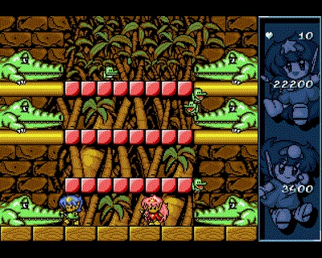
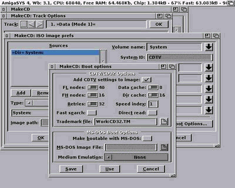

The Solana Vanishing Act
The Solana Vanishing Act
I made a simple Workbench CD for the Amiga CD32, which can be used on an unexpanded machine. It needs no keyboard, can be used with only the joypad via an on screen keyboard. There are many game collection CDs available (some can even be used for listening .mods or watch .anims), but I missed the AmigaOS look'n'feel, so I made a system for myself.
You can listen to .mods, .sids, you can watch Amiga and scene related pictures, anims, try some games and demos, read documents (the complete AmigaDOS manual, the CD32 developer kit and many CD32 related articles from Aminet), you can browse other CDs, listen to audio CDs, and most of all, you can expand it to fit your needs, put your favourite games, demos, on it before you burn the iso, if you want.
Very simple. just burn the ISO with your favorite CD burner. Be careful to burn it with the slowest possible speed, and use CD-R disks only, the CD32 doesn't support CD-RWs. Put the disk in your CD32 and it will boot. That's all.
CD32WB will boot to a full featured Workbench environment (MagicWB icons, KingCON, MUI, ToolsDaemon, optional MagicMenu, etc) and will leave 1.5Mb chipmem free. The booting process is optimized, it loads and extracts almost everything to RAM, boots from there, then cleans it up. This way the booting time is 2-3x times faster, and saves the health of your CD drive too. But don't forget, the CD drive in CD32 reads max. at 300Kb/s, so the booting will still take much more time than on hard drive equipped Amiga.
If you hold down the red button of the joypad during booting, it will enter the 'boot-with-no-startup' mode, and you will get a shell window with an onscreen keyboard and 1.8Mb free chip memory. It's not possible to get more memory on CD32, because the Extended ROM, the joymouse and onscreen keyboard takes up the rest, but it still can be enough to run games and demos that won't run from Workbench. If you type 'menu' or even shorter 'm', you will get a quicklaunch menu. Check the readme on the CD for more shell command aliases.
Here is how it looks:

Here is the startup-sequence I made for the system:
; Startup-Sequence customized for CD32 systems 17/10/09
; by neongod
; Launching CD32WB (Workbench 3.1)
C:Freeanim ; Makes sure the CD32 animation closes nicely,
; it simply opens and closes the freeanim.library.
;Part of the CD32 developer tools and used on most CD32 CDs
C:SetPatch QUIET
C:BBlank ; Set the border color to black
C:PicBoot S:bootpic.gif fadein 1 DETACH ; Display boot picture
C:MakeDir RAM:T RAM:Clipboards RAM:ENV RAM:ENV/Sys
C:Joypad RED ; Check for joypad button
if warn ; If pressed, go into no-startup mode
C:StopPicBoot
Assign >NIL: ENV: RAM:ENV
Assign >NIL: T: RAM:T
RUN >NIL: C:CD32ctrl DOUBLESPEED NOCDREBOOT QUIET ; Set CD speed
RUN >NIL: C:JoyMouse XMOVE=5 YMOVE=5 DELAY=0 ACCEL ; Enable Joypad mouse
Newcli con:/11//245/AmigaShell/AUTO/CLOSE
C:OSK QUIET
EndCLI >NIL:
endif
C:Copy >NIL: S:bootpack.run RAM: ; Bootpack.run is a self-extracting Lha file
; containing the boot system files for
; reducing copying small files from CD.
; See below the contents of it.
cd RAM:
Bootpack.run >NIL: ; Extract the bootpack
Resident >NIL: RAM:T/Assign PURE ; Make commands resident
Resident >NIL: RAM:T/Delete PURE
Assign >NIL: ENV: RAM:ENV
Assign >NIL: T: RAM:T
RAM:T/CD32ctrl DOUBLESPEED NOCDREBOOT QUIET
RUN >NIL: RAM:T/JoyMouse XMOVE=7 YMOVE=7 DELAY=0 ACCEL
RUN >NIL: RAM:T/MagicWB-Demon 4,123,123,123 5,175,175,175 6,170,144,124 7,255,169,151 8,0,0,255
Assign >NIL: CLIPS: RAM:Clipboards
Assign >NIL: REXX: S:
Assign >NIL: KEYMAPS: DEVS:Keymaps
Assign >NIL: LOCALE: SYS:Locale
Assign >NIL: LIBS: SYS:Classes ADD
Assign >NIL: HELP: LOCALE:Help DEFER
Assign DOpus: Sys:Utilities
RAM:T/AddDataTypes REFRESH QUIET
RAM:T/IPrefs
RAM:T/ConClip
Path >NIL: RAM: C: SYS:Utilities SYS:Rexxc SYS:System S: SYS:Prefs SYS:Tools SYS:Tools/Commodities
Assign MUI: "Sys:MUI"
Assign add LIBS: MUI:Libs
Assign add LOCALE: MUI:Locale
Assign Asmpro: Sys:Misc/AsmPro
Assign Blitz2: Sys:Misc/BlitzBasic
Assign Blitzlibs: Sys:Misc/BlitzBasic/Blitzlibs
Assign JPEGTMP: "RAM:T"
Assign CON: DISMOUNT
Assign RAW: DISMOUNT
RAM:T/Mount CON: from DEVS:KingCON-mountlist
RAM:T/Mount RAW: from DEVS:KingCON-mountlist
RAM:T/LoadWB
RUN >NIL: RAM:T/StopPicBoot
RUN >NIL: RAM:T/ClickToFront
Delete RAM:bootpack.run QUIET ; Deleting the boot archive to save memory
wait 1
Run >NIL: RAM:T/ToolsDaemon
Delete RAM:T/#? QUIET
Resident Delete REMOVE
Resident Assign REMOVE
EndCLI >NIL:
The bootpack.run archive contains the following stuff:
Disk.info ENV/DELICONFIG ENV/Language ENV/MagicMenu.prefs ENV/MagicWB ENV/mui/«Global».prefs ENV/Sys/def_disk.info ENV/Sys/def_drawer.info ENV/Sys/def_project.info ENV/Sys/def_tool.info ENV/Sys/font.prefs ENV/Sys/palette.ilbm ENV/Sys/Palette.prefs ENV/Sys/palette8bit.ilbm ENV/Sys/screenmode.prefs ENV/Sys/wbconfig.prefs ENV/Sys/WBPattern.prefs T/AddDataTypes T/Assign T/cd32ctrl T/ClickToFront T/ConClip T/Delete T/IPrefs T/JoyMouse T/LoadWB T/MagicWB-Demon T/Mount T/StopPicBoot T/ToolsDaemon
The CD32 won't boot a CD without it having a "trademark code" in the appropriate sector. That's why we need the CD32 Development Kit, which includes the necessary tools. Here is how to make a bootalbe CD under an emulator like WinUAE.
First of all we need a complete Workbench 3.1 installation. I have my own system I copied over from my real Amiga 1200, but if you don't, I recommend using one of the distributions available (like what comes with the Amiga Forever package, ClassicWB or AmiKit) to save time on building your own system.
Copy the CD32.TM file from the CD32/ISO9660Tools_V1.04/ISOCD folder of the CD32 Development Kit to our system. Any place would do, let's say Work:
Install and launch MakeCD. We will generate an ISO from a folder in our filesystem (where you prepared your stuff for you CD32 Workbench CD). Of course it will need to have the folder structure needed for an Amiga system to boot (C, S, L, with assign, startup-sequence and all the rest that's needed). The CD's filesystem has to be ISO9660 (maybe with RockRidge extension), because the CD32 can't handle the newer ones.
After launching MakeCD, select Expert mode, then in the main window click "Add". Set the "File System" as Source and "Use Image File" as Target and the name and location of the generated ISO file.
When browsing the source folder, click on the "Boot Options" button and enable the "Add CDTV settings to Image" option. With the button next to the "Trademark File" field, browse and select the CD32.TM file you copied over. It's a good idea to set the "Volume Name" too, especially if we reference it in our CD32 startup-sequence file or somewhere else.

That's all, we can start the ISO image write process. It will make an image file with the extension .raw. We can copy over the raw file to Windows and burn it with a CD burner software of our choice.
It's easy to make even a CD that will launch a game that was never released for the CD32. The only thing needed is for the game to have an HD install option. The installed folder can be put in the ISO image and you can launch the game via the startup-sequence, or by putting it into a Selector menu, if you want more games on one CD. You can also use WHDLoad, but don't forget that the CD32 has only 2MB RAM, so it might not be enough to load the .slave files of a multiple floppy game.
Note: To not waste CDs, you can use Virtual CloneDrive (or equivalent) to mount the prepared ISO image file and boot it under WinUAE set to emulate the CD32 (with Kickstart 40.060 and Extended 40.060). Write it to a real CD when you're completely satisfied.